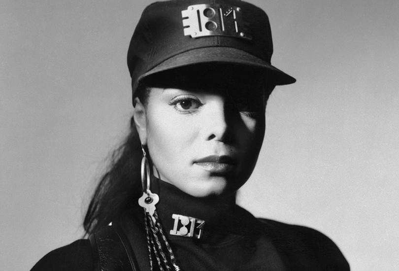
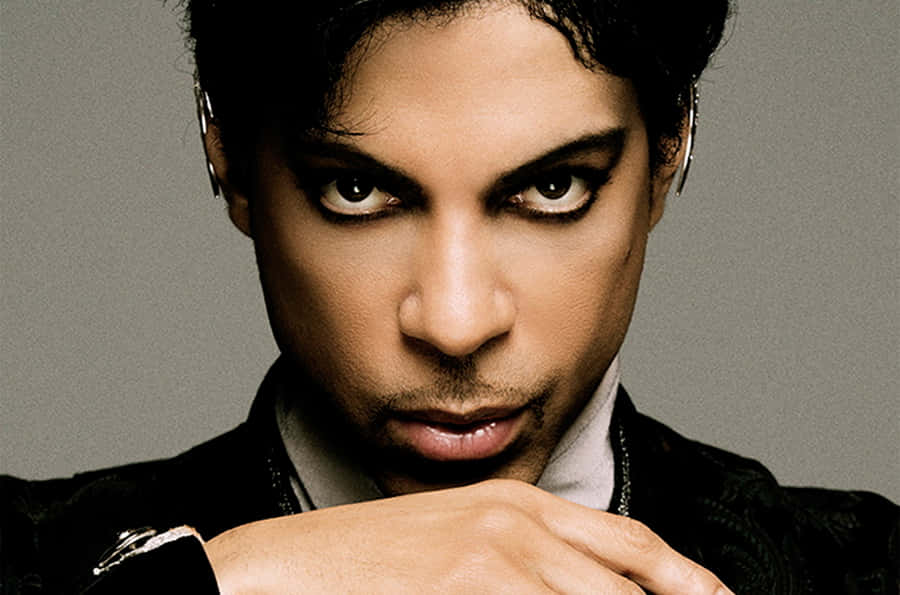
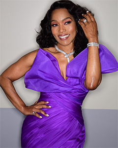

Janet Jackson

I'm inspired by Janet Jackson because she stands firmly against injustice while maintaining a remarkable career and a humble, grounded personality. From a young age, she stepped out of the shadow of her famous family to carve out her own path, becoming a trailblazer in both music and film. Her groundbreaking album Rhythm Nation 1814 not only topped charts but also addressed urgent social issues like racism, poverty, and education, proving that pop music could be both entertaining and thought-provoking. Throughout her career, she has continuously pushed creative boundaries, blending R&B, pop, funk, and socially conscious lyrics to create a sound uniquely her own.
Beyond her music, Janet has also made a significant impact in film. Her role as Justice in Poetic Justice showcased her emotional depth and acting talent, portraying a young woman navigating grief, love, and identity with grace and strength. She brought authenticity to the screen, representing Black women in a way that felt real and empowering. Despite her global fame, Janet remains known for her humility, professionalism, and compassion. She has used her platform to speak out on issues such as women’s rights, self-expression, and social change. Her legacy is one of strength, resilience, and unwavering dedication to using her voice for good—qualities that continue to inspire generations around the world.
Prince

I'm inspired by Prince because he was open-minded, unapologetically authentic, and unafraid to speak the truth—both in his art and in his life. As a musical genius and boundary-pushing visionary, he revolutionized the music industry with his eclectic style, genre-defying sound, and fearless experimentation. From funk and rock to soul and electronic, Prince created his own sonic universe, blending influences with unmatched originality and flair. His performances were magnetic, his lyrics deeply expressive, and his ability to channel raw emotion through music set him apart as one of the most influential artists of all time.
But Prince's influence extended far beyond music. He was a trailblazer for artistic freedom, using his platform to challenge the exploitative practices of the recording industry. His bold decision to change his name to an unpronounceable symbol was a protest against contractual restrictions that robbed artists of their creative control and intellectual property. In doing so, he ignited a larger conversation about ownership, rights, and the importance of integrity in the creative process—issues that remain relevant today.
Prince was also a quiet but powerful force for social change. Though he rarely sought the spotlight for his philanthropic efforts, he consistently gave back to communities in need, supporting initiatives focused on education, technology access, youth empowerment, and social justice. He funded programs to bridge economic divides, particularly in underserved Black communities, and mentored young artists behind the scenes to ensure the next generation had the support and freedom to thrive.
His legacy is a testament to the transformative power of creativity, courage, and compassion. Prince taught the world that true artistry isn’t just about making music—it’s about standing up for what you believe in, staying true to yourself, and using your voice to uplift others. His influence continues to ripple across generations, inspiring creatives, activists, and dreamers to lead with purpose, passion, and power.
Angela Basset

Angela Bassett is not only a phenomenal actress but also an inspiring role model whose impact extends far beyond the screen. With a career spanning decades, she has consistently delivered performances that are powerful, emotionally rich, and deeply authentic—portraying real, complex characters with nuance and dignity. From her iconic role as Tina Turner in What's Love Got to Do with It to her commanding presence in Black Panther and 9-1-1, Bassett brings a rare intensity and truth to every role she undertakes, earning widespread critical acclaim and the admiration of global audiences.
Beyond her extraordinary talent, Angela Bassett exemplifies grace, intelligence, and unwavering professionalism. She is known for her dedication to her craft, her advocacy for representation in Hollywood, and her ability to elevate every project she touches. As a Black woman in a historically exclusive industry, she has broken barriers and opened doors for future generations, using her platform to challenge stereotypes and uplift underrepresented voices.
Her presence is a powerful reminder that strength and softness can coexist, and that excellence is not simply about talent, but about integrity, perseverance, and purpose. Angela Bassett continues to inspire aspiring artists, young women, and anyone striving to create meaningful change—not just through her performances, but through the example she sets every day.